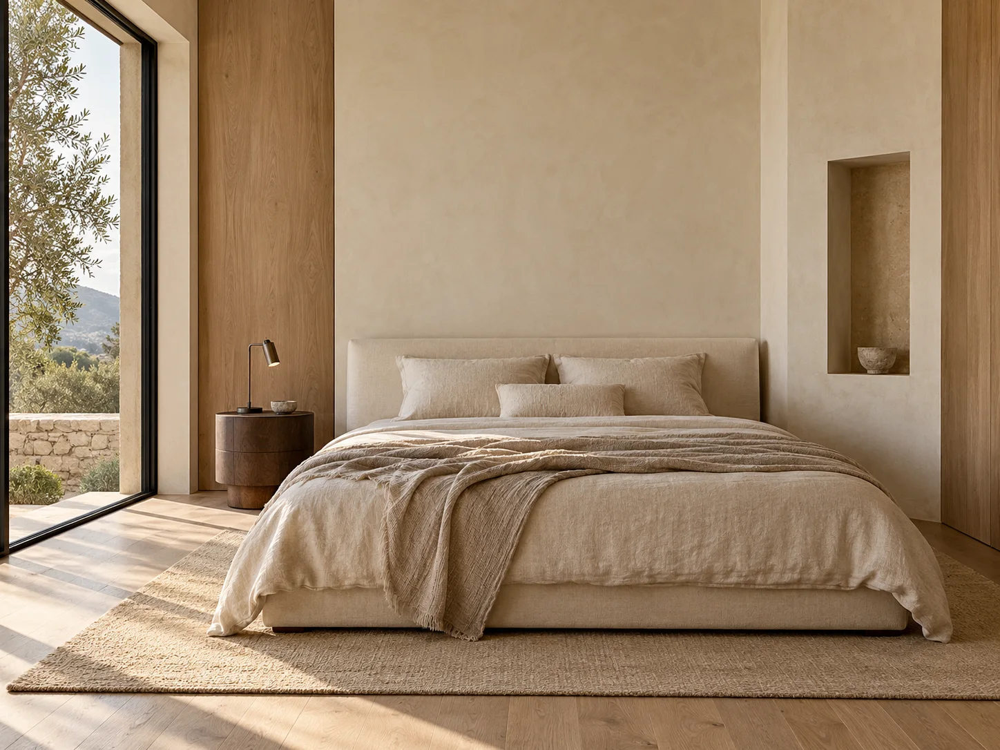

Предмет меняет пространство



Тёплая грань
Спальня: плоскость изголовья и место для повседневных мелочей.
DEMO · концепция гостиной
Задача
Собрать общение вокруг низкого стола, сохранив светлый фон. Каждый крупный предмет получает понятную роль.
Ограничения
Проход нужен и при занятой посадке. Несколько сильных акцентов будут спорить с рифлёной стеной.
Решения
- Округлое кресло разворачиваем к дивану, собирая разговор.
- Низкий стол задаёт центр; подход проверяем с обеих сторон.
- Вертикальная фактура остаётся фоном, а маршрут идёт вдоль посадки.
Компромисс
Выбираем один главный предмет. Остальные поддерживают его масштаб, поэтому декора на виду меньше.